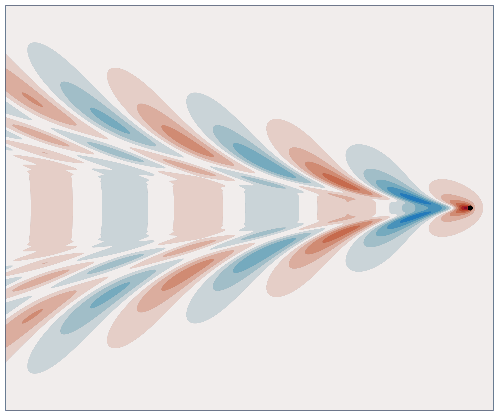
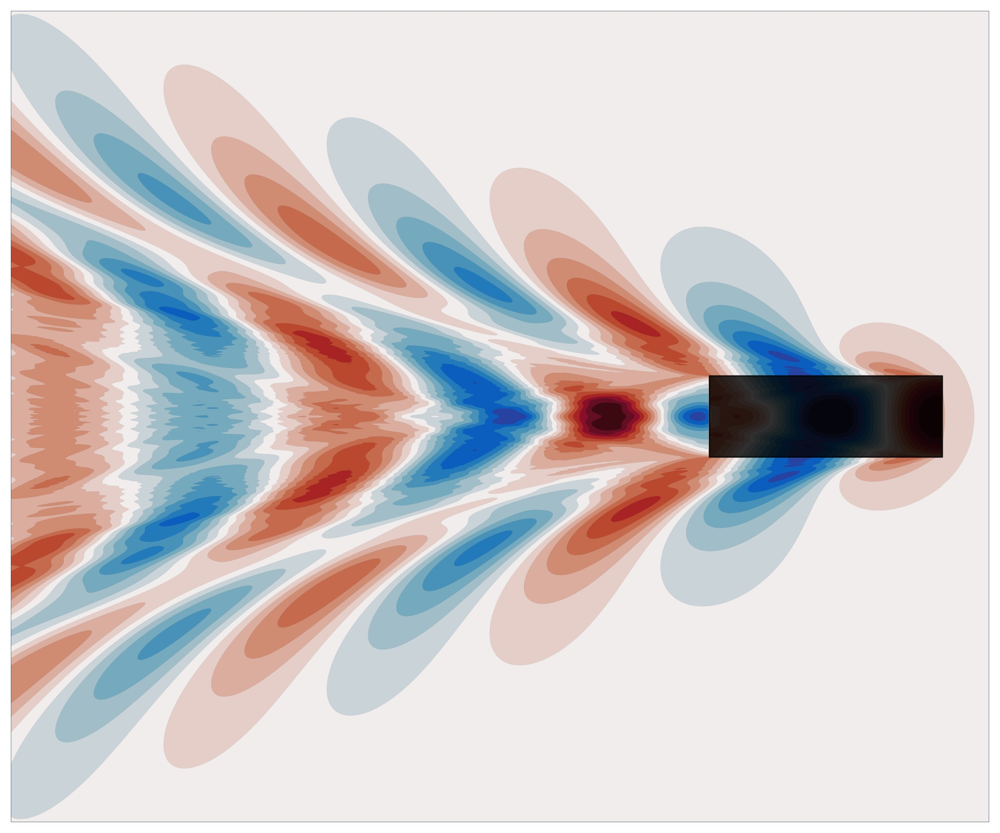
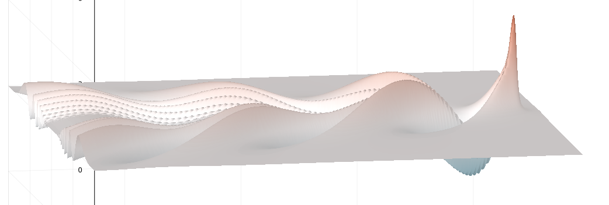
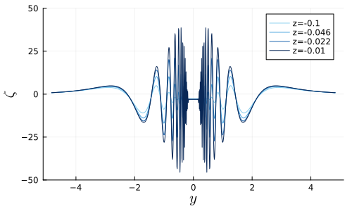
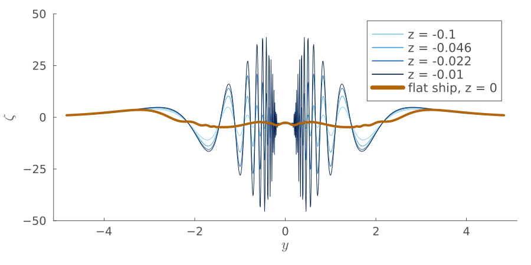
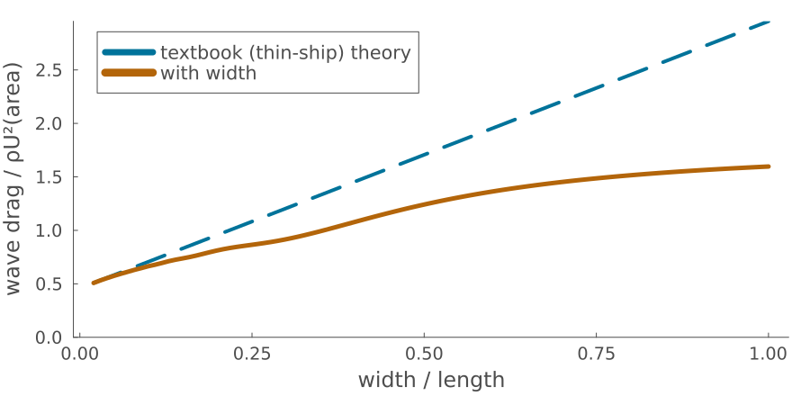

Linear wave theory captures the essential physics of free-surface flows at a fraction of the computational cost of nonlinear and viscous methods, making it attractive for design, real-time control, and surrogate modeling applications. However, the Kelvin Green's function for a translating point-source generates unbounded wave energy in the z → 0 limit, causing both numerical difficulties and physical inconsistencies. This paper develops a modified kernel for the Kelvin potential incorporating an elliptic spanwise line integration that naturally resolves this ill-posedness, yielding finite wave energy over the entire free surface. We then present a fast evaluator for both point and line kernels using contour deformation adapted to the non-analytic Kelvin phase, achieving 104–105 speedup over direct quadrature while preserving the wake asymptotics. Predictions on the most challenging z = 0 limit demonstrate physically consistent wave patterns and wave resistance trends. An open-source Julia implementation is provided.

new
title slide
slide 6
new
wave cut→ only the stationary regions need real work
→ short waves cancel across the width

wide ships→ the same cancellation, in the drag
The singular behavior of the point-source Kelvin Green's function as z → 0 is a fundamental inconsistency which produces unbounded wave energy even far downstream, but the present work shows that this pathology is not intrinsic to linear wave theory. An elliptic source distribution, motivated by the finite disturbance width, yields a regularized kernel with finite energy and consistent spectral decay, without the introduction of empirical damping, arbitrary wavenumber filtering, or implicit formulations.
The resulting formulation produces well-behaved free-surface predictions directly on z = 0, capturing Froude number trends and wave interference patterns consistent with finite-width ships. The ky−3/2 spectral decay of the regularized kernel ensures finite wave energy and elevation everywhere, but higher-order derivatives of the wave field will eventually diverge at small scales, due to the absence of nonlinear and viscous dissipative mechanisms. However, the present formulation resolves the ill-posedness in the physically relevant quantities of wave elevation, energy, and drag within the inviscid linear framework.
The present work focuses on the leading-order flat-ship approximation, neglecting nonlocal wave interactions on a finite depth hull. Accounting for local hull geometry while retaining the regularized kernel framework is a natural extension, at which point the predictions could be compared to experiments or high-fidelity nonlinear simulations. However, the contour-deformation approach developed here is completely general, evaluating both point and line kernels efficiently (achieving 104–105 speedup over direct quadrature) while maintaining accuracy across the entire lower-half domain. Therefore the regularized kernel and efficient evaluator form a foundation for a well-posed Kelvin solver fast enough for use in applications requiring repeated evaluations, including design optimization and physics-informed surrogate modeling.
Linear wave theory captures the essential physics of free-surface flows at a fraction of the computational cost of nonlinear and viscous methods, making it attractive for design, real-time control, and surrogate modeling applications. However, the Kelvin Green's function for a translating point-source generates unbounded wave energy in the z → 0 limit, causing both numerical difficulties and physical inconsistencies. This paper develops a modified kernel for the Kelvin potential incorporating an elliptic spanwise line integration that naturally resolves this ill-posedness, yielding finite wave energy over the entire free surface. We then present a fast evaluator for both point and line kernels using contour deformation adapted to the non-analytic Kelvin phase, achieving 104–105 speedup over direct quadrature while preserving the wake asymptotics. Predictions on the most challenging z = 0 limit demonstrate physically consistent wave patterns and wave resistance trends. An open-source Julia implementation is provided.
weymouth.github.io/KelvinFlatShip/talk